La App Recolectora NextBus es una aplicación móvil multiplataforma (Android e iOS) que permite a los observadores de campo registrar información de transporte público de manera estructurada y confiable, incluso sin conexión a internet.
Los datos recopilados alimentan un sistema centralizado en la nube que permite al equipo analítico evaluar la demanda, el comportamiento de las rutas y la cobertura de observación.
Todos los datos se guardan primero en el dispositivo. La sincronización con la nube puede hacerse en cualquier momento, incluso días después, cuando exista conexión a internet.
| Requisito | Mínimo |
|---|---|
| Sistema operativo Android | Android 8.0 (Oreo) o superior |
| Sistema operativo iOS | iOS 13 o superior |
| Almacenamiento libre | 100 MB |
| Conexión para sincronizar | Wi-Fi o datos móviles (3G/4G/5G) |
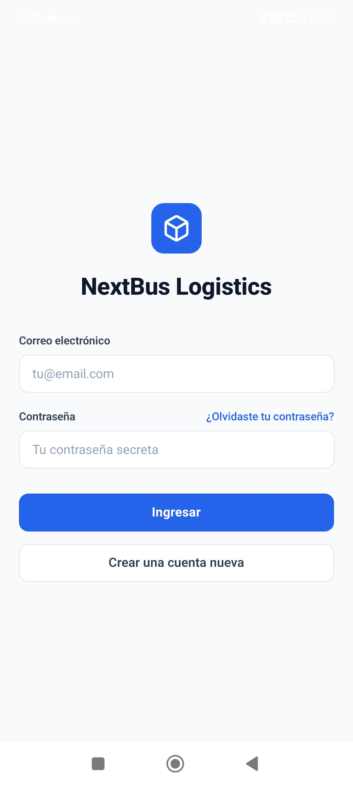
Al abrir la app por primera vez, o al cerrar sesión, se muestra automáticamente la pantalla de inicio de sesión de NextBus Logistics.
| Campo | Descripción |
|---|---|
| Correo electrónico | Dirección de correo institucional registrada en el sistema. |
| Contraseña | Clave personal asignada durante el registro (mínimo 6 caracteres). |
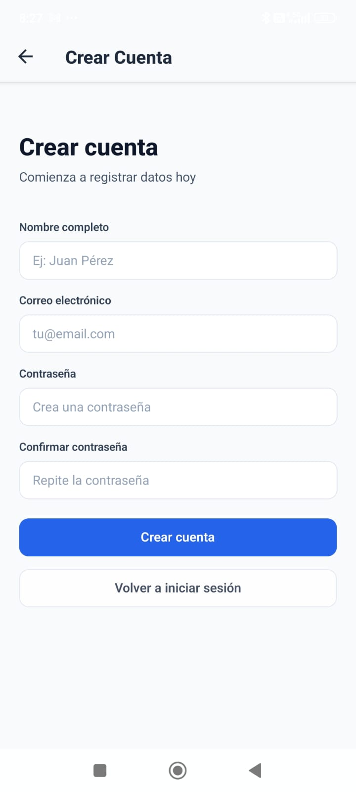
Desde la pantalla de login, toque "Crear una cuenta nueva" para abrir el formulario de registro. Todos los campos son obligatorios.
| Campo | Descripción |
|---|---|
| Nombre completo | Nombre que identificará al observador en todos los registros del sistema. |
| Correo electrónico | Dirección única de correo, usada como nombre de usuario. |
| Contraseña | Mínimo 6 caracteres. Se recomienda usar letras y números. |
| Confirmar contraseña | Repetir la contraseña para evitar errores tipográficos. |
✅ Al presionar "Crear cuenta", el sistema registra la cuenta y la sesión se inicia automáticamente, sin necesidad de volver a hacer login.
La opción "Cerrar sesión" se encuentra al final del menú lateral (drawer). Al presionarla, la app cerrará la sesión y regresará a la pantalla de login.
Asegúrese de haber sincronizado todos los datos pendientes. Los datos no sincronizados quedan guardados en el dispositivo pero estarán vinculados a su cuenta; otro usuario en el mismo teléfono no podrá subirlos.
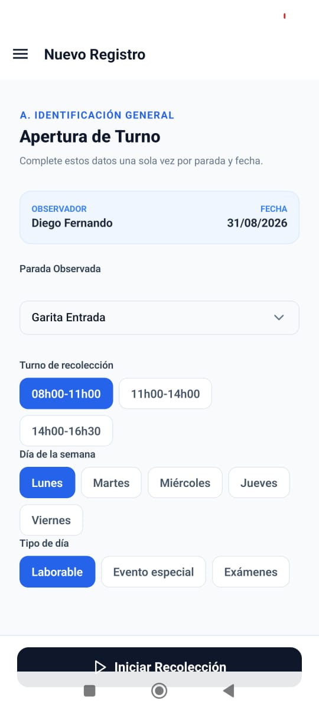
Esta es la pantalla de inicio del módulo Formulario. Antes de comenzar a registrar datos, el observador debe completar cuatro campos obligatorios que identifican la sesión.
En la parte superior se muestra automáticamente el nombre del observador (usuario autenticado) y la fecha actual del dispositivo, sin necesidad de ingresarlos manualmente.
💡 Si existía una sesión en progreso de una jornada anterior, la app la mostrará como "sesión pendiente" y permitirá retomar o iniciar una nueva apertura.
| Campo | Tipo | Descripción |
|---|---|---|
| Parada Observada Obligatorio | Selector desplegable | Parada física donde se realizará la observación. Las opciones se organizan en Puntos de Entrada (sentido de ida) y Puntos de Salida (sentido de vuelta). Ver imágenes debajo. |
| Turno de Recolección Obligatorio | Selector de opciones |
Franja horaria asignada al turno de trabajo:
08h00–11h00
11h00–14h00
14h00–16h30
|
| Día de la Semana Obligatorio | Selector de opciones |
Día en que se realiza la observación (solo días laborables):
LunesMartesMiércolesJuevesViernes
|
| Tipo de Día Obligatorio | Selector de opciones |
Categoría que describe la naturaleza del día observado:
LaborableEvento especialExámenes
|
| Observador / Fecha Auto | Solo lectura | Se rellena automáticamente. No requiere acción del usuario. |
Al tocar el selector "Parada Observada" se despliega un panel con todas las paradas disponibles, organizadas en dos grupos según el sentido del recorrido:
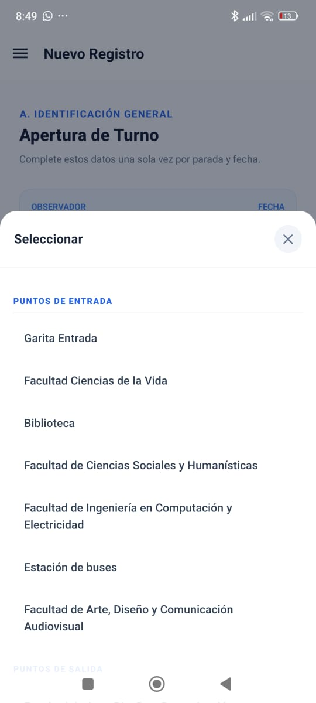
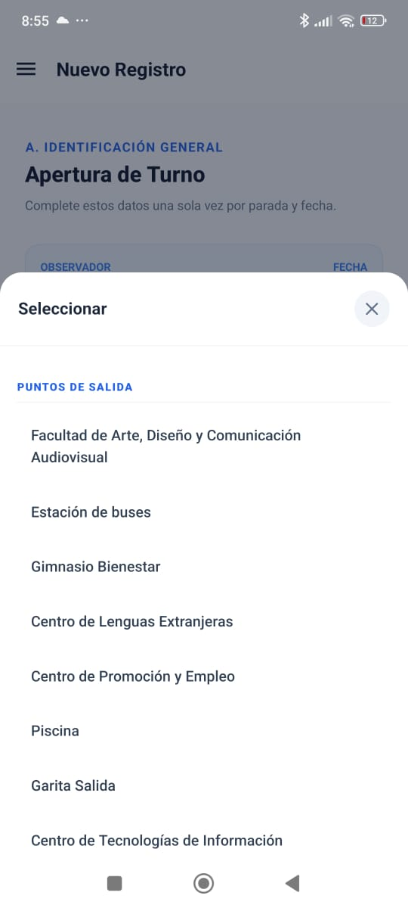
La app guarda automáticamente los campos mientras los completa. Si cierra accidentalmente la pantalla o la aplicación, al regresar encontrará los datos tal como los dejó, sin necesidad de volver a ingresar la información.
Una vez iniciado el turno, esta es la pantalla principal de trabajo. Desde aquí el observador gestiona los intervalos de demanda (conteo de personas que llegan y se retiran) y los eventos de llegada de bus.
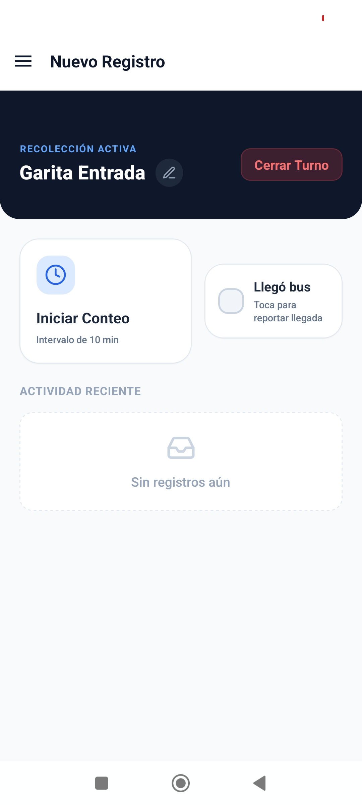
Al ingresar al panel, la pantalla muestra tres elementos clave:
La sección "Actividad Reciente" en la parte inferior lista todos los intervalos y eventos registrados durante el turno actual.
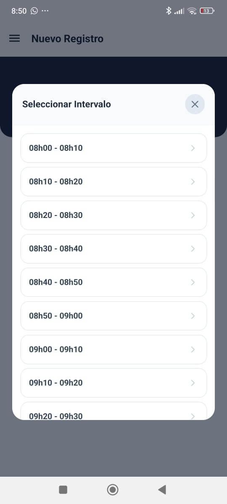
Al tocar "Iniciar Conteo", se despliega un panel con todos los intervalos de 10 minutos disponibles para el turno seleccionado.
Los intervalos deben registrarse en orden ascendente: primero 08h00–08h10, luego 08h10–08h20, y así sucesivamente hasta completar el turno. Los intervalos ya registrados aparecen desactivados y no pueden seleccionarse de nuevo.
El sistema muestra automáticamente resaltado el intervalo que corresponde a la hora actual del dispositivo, como referencia para el observador.
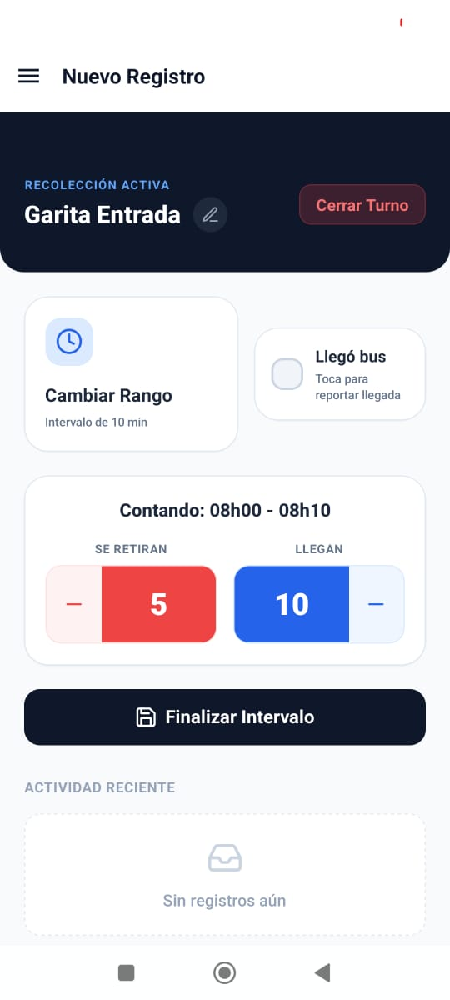
Una vez seleccionado el intervalo, aparecen los contadores. El encabezado muestra el rango activo (ej. Contando: 08h00 – 08h10).
| Contador | Color | Qué registra |
|---|---|---|
| Se Retiran | ■ Rojo | Personas que llegan a la parada pero se van sin abordar ningún bus durante el intervalo. |
| Llegan | ■ Azul | Personas que llegan a la parada a esperar el bus durante el intervalo. |
Cada contador tiene botones + (incrementar) y − (decrementar) para ir ajustando el conteo en tiempo real mientras se observa la parada.
Al terminar el intervalo, se presiona "Finalizar Intervalo" para abrir el panel de cierre.
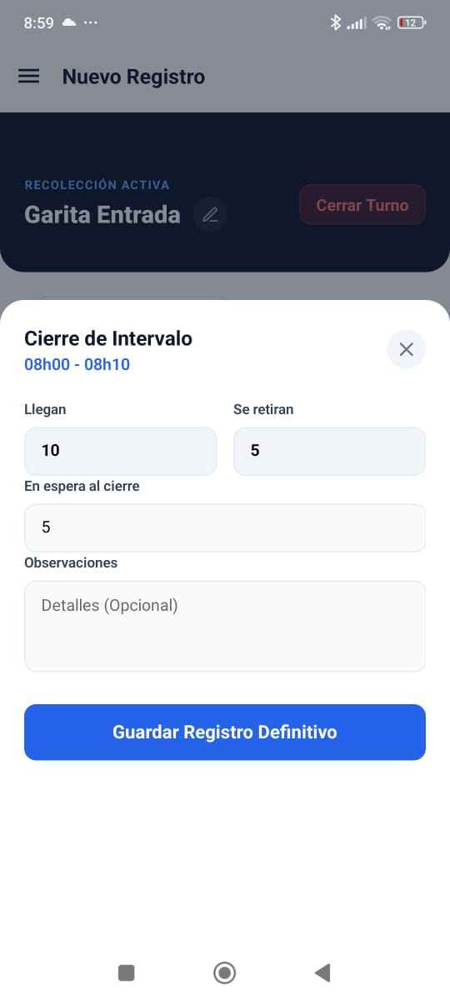
El panel "Cierre de Intervalo" permite corroborar y ajustar los datos antes de guardarlos de forma definitiva.
| Campo | Descripción |
|---|---|
| Llegan Req. | Se pre-rellena con el valor del contador. Puede corregirse manualmente. |
| Se Retiran Req. | Se pre-rellena con el valor del contador. Puede corregirse manualmente. |
| En espera al cierre | Personas que permanecieron en la parada al finalizar el intervalo, sin haber abordado un bus. Se calcula y confirma aquí. Por defecto: 0. |
| Observaciones Opcional | Texto libre para novedades del intervalo. |
Es la diferencia entre las personas que llegaron y las que abordaron un bus o se retiraron durante el intervalo. Representa la cola acumulada que quedó en la parada.
El registro de un bus es un sub-flujo que se activa desde el panel de recolección activa cuando el observador detecta la llegada de un bus a la parada. Consta de cuatro momentos encadenados.
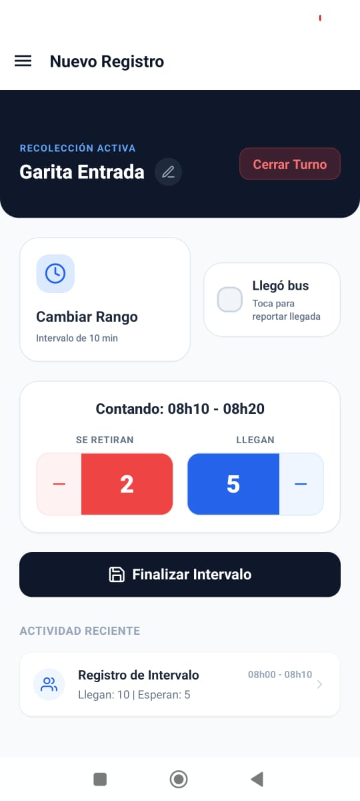
Antes de que llegue el bus, el observador está contando activamente el intervalo 08h10–08h20: ha registrado 2 personas que se retiraron y 5 que llegaron a la parada.
En la sección de Actividad Reciente se puede ver el intervalo anterior (08h00–08h10) ya guardado. Cuando se detecta la llegada de un bus, el observador toca el checkbox "Llegó Bus" sin necesidad de cerrar el intervalo actual.
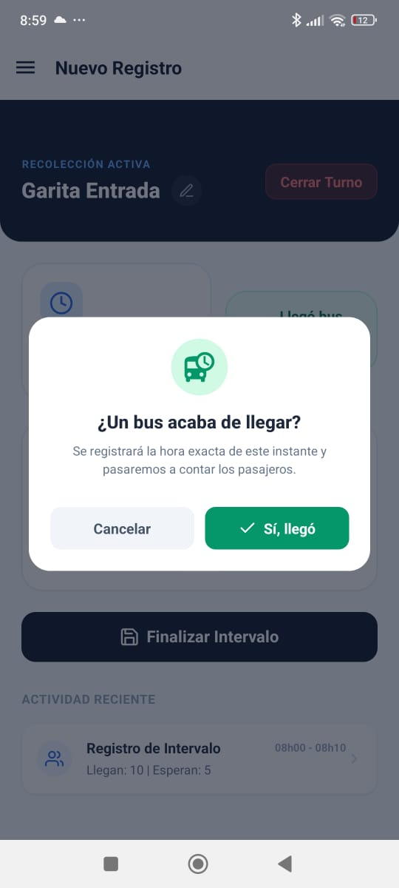
Al tocar el checkbox "Llegó Bus", la app muestra un diálogo de confirmación: "¿Un bus acaba de llegar?"
Este paso es importante porque en el momento en que el usuario presiona "Sí, llegó", la app registra automáticamente la hora exacta de llegada del bus. Esta hora no puede modificarse después.
| Opción | Acción |
|---|---|
| Cancelar | Cierra el modal. Vuelve al panel sin registrar nada. El conteo del intervalo continúa intacto. |
| Sí, llegó | Captura la hora actual como hora de llegada y navega al formulario de Detalles del Bus. |
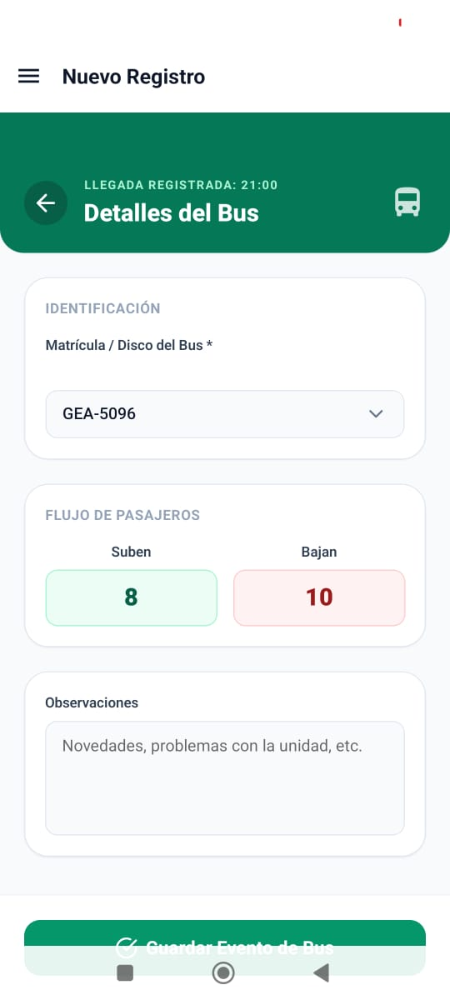
La pantalla "Detalles del Bus" muestra en el encabezado verde la hora de llegada registrada automáticamente. El observador completa los siguientes campos:
| Campo | Obligatorio | Descripción |
|---|---|---|
| Matrícula / Disco | Sí | Seleccionar de la lista de buses registrados en el sistema. |
| Suben | Sí | Número de pasajeros que abordaron. Campo con fondo verde. |
| Bajan | Sí | Número de pasajeros que descendieron. Campo con fondo rojo. |
| Observaciones | No | Texto libre: novedades, fallas, incidentes con la unidad. |
| Hora llegada | Auto | Capturada al confirmar en el modal anterior. |
| Hora salida | Auto | Capturada en el momento de presionar "Guardar". |
La app calcula sola el tiempo que el bus estuvo en la parada: desde "Sí, llegó" hasta "Guardar Evento de Bus". No requiere cronómetro manual.
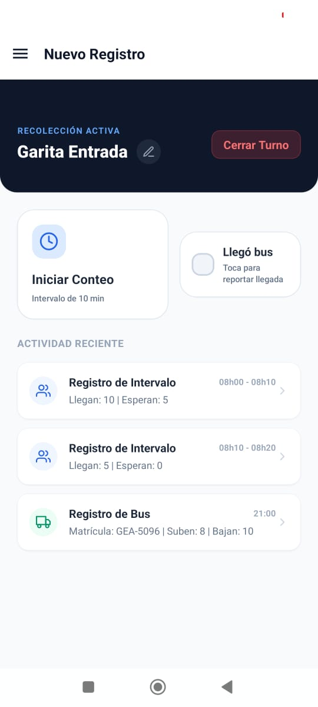
Al guardar el evento, la app regresa automáticamente al panel principal. La sección "Actividad Reciente" muestra el historial completo del turno. Los datos cuentan una historia coherente:
| Registro | Detalle | Lógica |
|---|---|---|
| Intervalo 08h00–08h10 | Llegan 10 · Se Retiran 5 · Esperan 5 | De 10 que llegaron, 5 se fueron sin bus. Quedan 5 en la parada. |
| Intervalo 08h10–08h20 | Llegan 5 · Se Retiran 2 · Esperan 0 | 5 heredados + 5 nuevos = 10. Se retiran 2, quedan 8. El bus llega a las 08h15 y suben exactamente 8 → 0 en espera. |
| Bus GEA-5096 · 08h15 | Suben 8 · Bajan 10 | Absorbe la cola completa. Los 8 que esperaban abordan el bus. |
Toque cualquier registro para ver su detalle completo o editarlo.
Dentro de un mismo intervalo pueden registrarse múltiples llegadas de bus. Cada vez que llegue un bus, toque "Llegó Bus" y repita el proceso desde el paso F.
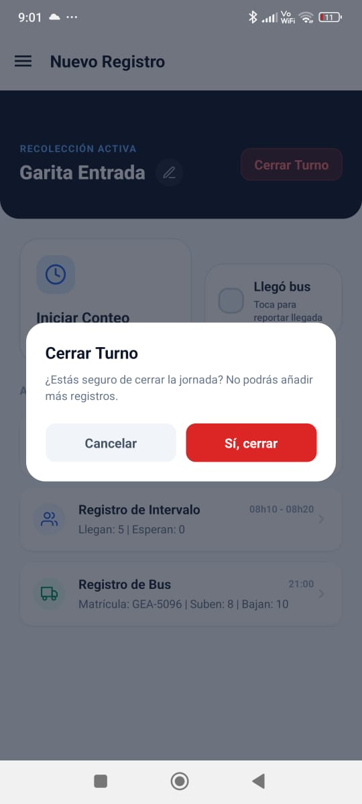
Al finalizar la jornada, el observador debe cerrar el turno para indicar que ya no se añadirán más datos. El botón "Cerrar Turno" se encuentra en la esquina superior derecha del panel de recolección, visible únicamente cuando existe una sesión activa.
⚠️ Acción irreversible: Una vez cerrado el turno, no podrá añadir ni editar registros de intervalos o buses para esa sesión. Asegúrese de haber registrado todos los datos antes de confirmar.
El cierre solo marca la sesión como completa en el dispositivo. Diríjase a Mis Registros para subir los datos a la nube.
Se accede desde el Historial de Sesiones → botón "Ver Detalles". Muestra un resumen ejecutivo con todos los totales calculados automáticamente a partir de los datos registrados.
Esta vista es de solo lectura. Para editar los datos de una sesión, use el botón "Retomar" en el historial (solo disponible en sesiones no cerradas).
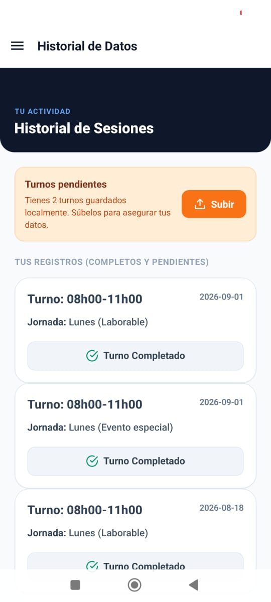
La pantalla "Historial de Datos" muestra todas las sesiones de recolección del usuario actual, tanto las completadas como las que aún están en progreso.
| Acción | Disponible cuando | Qué hace |
|---|---|---|
| Retomar | Sesión en estado "activo" o pendiente | Carga la sesión y abre el panel de recolección para continuar registrando datos. |
| Ver Detalles | Cualquier sesión | Abre el Resumen de Turno con los totales calculados. |
Cuando existen sesiones guardadas localmente que aún no han sido subidas al servidor, aparece un banner naranja en la parte superior de la pantalla con el número de turnos pendientes.
Todo se almacena en el dispositivo hasta que usted lo suba. No existe límite de tiempo para sincronizar, pero se recomienda hacerlo al final de cada jornada.
Esta pantalla muestra un mapa de calor que indica en qué días y franjas horarias se han realizado observaciones, considerando todos los usuarios del sistema.
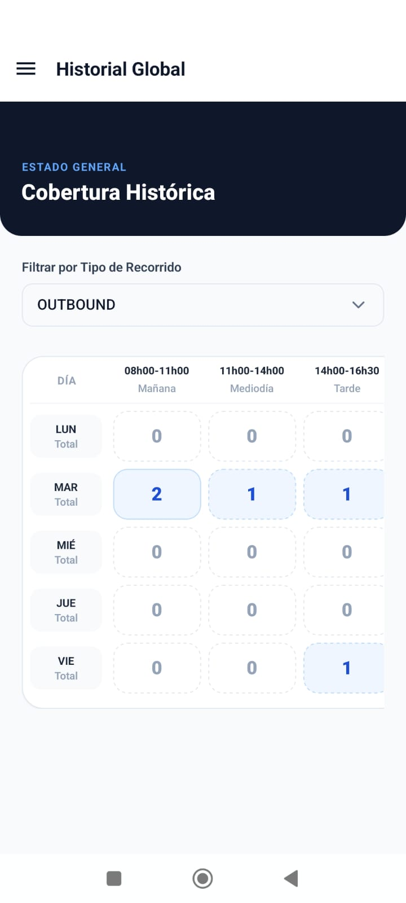
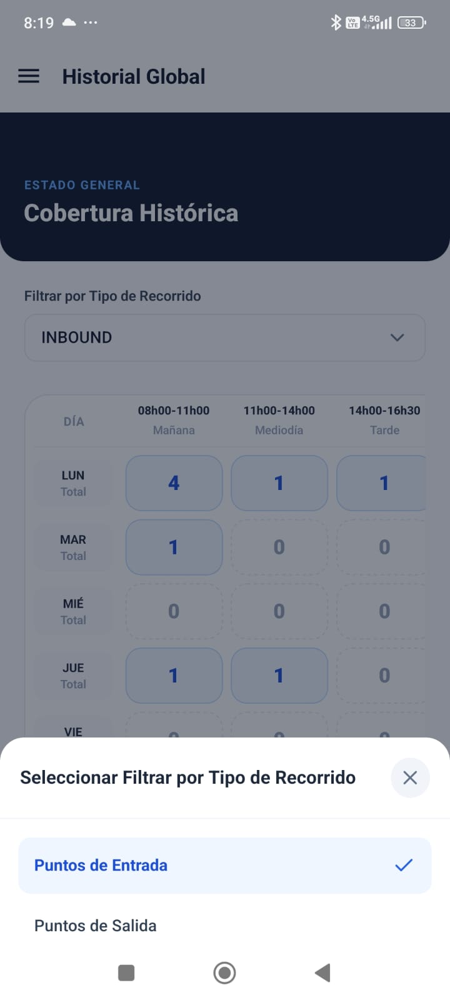
El eje vertical muestra los días de la semana (Lunes a Viernes), y el eje horizontal las franjas horarias. Cada celda representa el número de sesiones registradas para esa combinación:
El selector en la parte superior permite ver la cobertura de Puntos de Entrada (INBOUND) o Puntos de Salida (OUTBOUND) de forma independiente. Los datos cambian según el filtro activo:
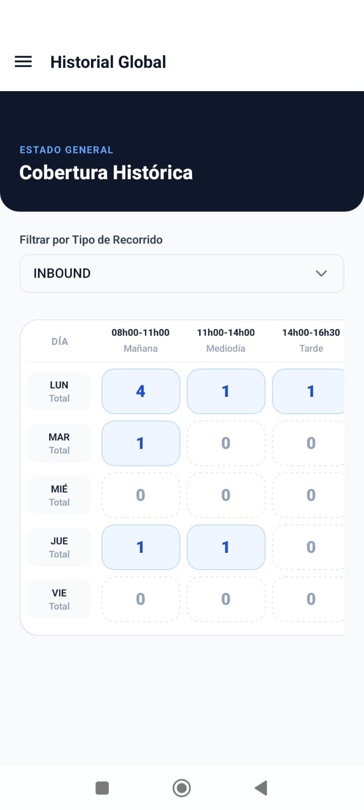
Un día con valor 0 en todos los turnos significa que ningún observador registró datos en ese sentido durante esa jornada. Use esta vista para identificar brechas de cobertura y planificar asignaciones.
Toque cualquier celda activa (con valor mayor a 0) para ver el detalle de qué paradas fueron observadas en ese día y turno específico.
Al tocar una celda del mapa de calor, se accede a esta pantalla que muestra, para el día y turno seleccionados, cuántas sesiones se registraron en cada parada individual.
| Elemento | Descripción |
|---|---|
| Nombre del día | El día seleccionado (ej. "Lunes"). |
| Franja horaria | El turno correspondiente (ej. "08h00–11h00"). |
| Total del turno | Número total de sesiones registradas en todos los puntos. |
| Actividad por Parada | Lista de paradas con un indicador de barra proporcional al número de sesiones. Ordenadas de mayor a menor. |
Esta pantalla permite iniciar un nuevo recorrido a bordo de un bus. Antes de comenzar a registrar el flujo de pasajeros en cada parada, el observador debe completar tres campos obligatorios que identifican el vehículo, la franja horaria y el sentido del trayecto.
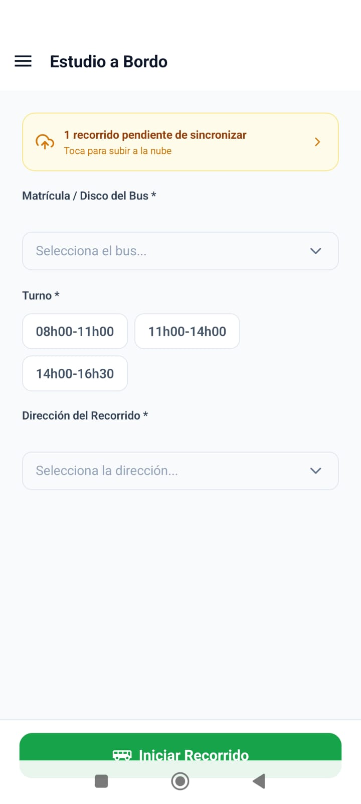
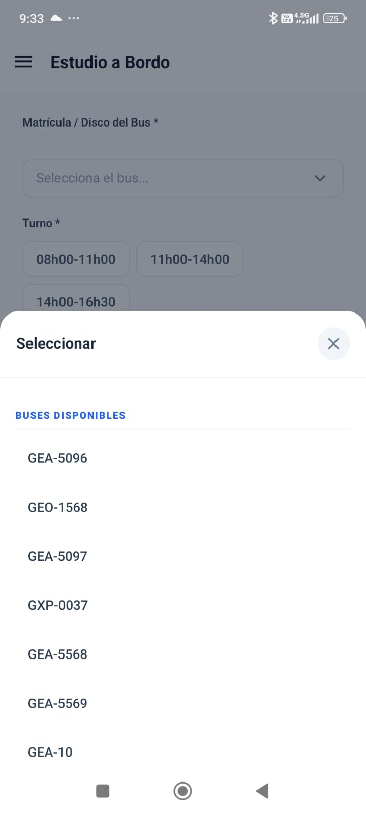
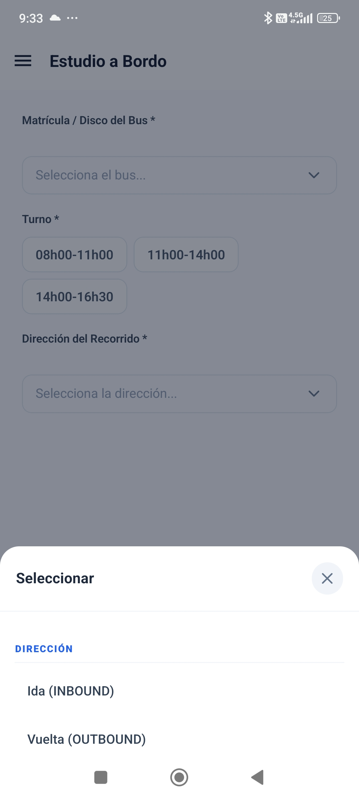
| Campo | Tipo | Descripción |
|---|---|---|
| Matrícula / Disco del Bus Obligatorio | Selector desplegable | Vehículo en el que se realizará el estudio. Las opciones (GEA-5096, GEO-1568, GEA-5097, GXP-0037, GEA-5568, GEA-5569) corresponden a buses reales de la flota. GEA-10 es exclusivamente para pruebas. |
| Turno Obligatorio | Botones de opción |
08h00–11h00
11h00–14h00
14h00–16h30
|
| Dirección del Recorrido Obligatorio | Selector desplegable |
Ida (INBOUND) — sentido de ida, paradas de entrada. Vuelta (OUTBOUND) — sentido de regreso, paradas de salida. |
Si existen recorridos guardados localmente, aparecerá un banner naranja en la parte superior indicando la cantidad pendiente. Tóquelo para sincronizarlos con la nube antes de iniciar un nuevo recorrido.
✅ Si ya tiene un recorrido en curso, la app mostrará un banner con la opción "Ir al Recorrido Activo" para retomarlo directamente sin perder datos.
Una vez iniciado el recorrido, esta pantalla es el panel de trabajo central del recolector. Permite capturar el flujo de pasajeros en cada punto del trayecto, parada por parada, hasta completar el recorrido.
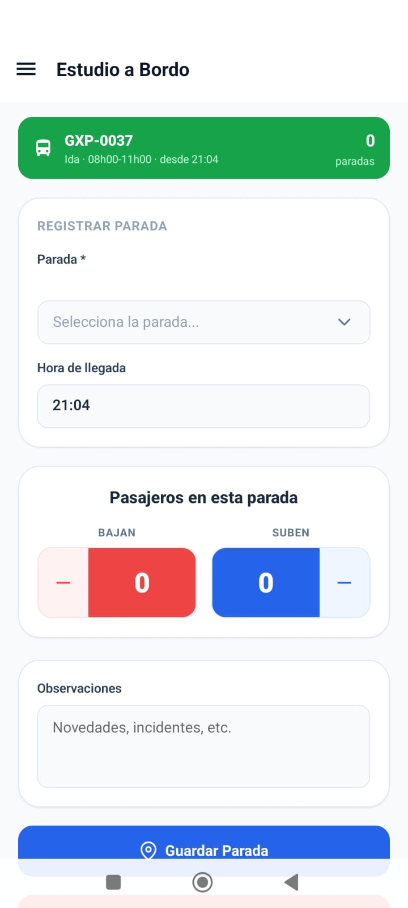
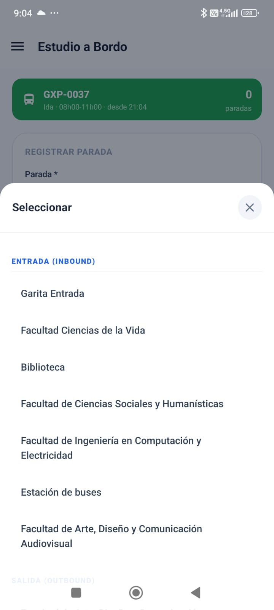
| Campo | Tipo | Descripción |
|---|---|---|
| Parada Obligatorio | Selector desplegable | Punto de parada actual. Las opciones se agrupan en Entrada (INBOUND) y Salida (OUTBOUND) según la dirección configurada al inicio. |
| Hora de llegada Auto | Campo HH:MM | Se rellena automáticamente con la hora del dispositivo al seleccionar la parada. Puede corregirse manualmente si el bus llegó antes de que se registrara. |
| Bajan | Contador +/− | Pasajeros que descienden del bus en esta parada. El botón rojo decrementa; el valor no puede ser negativo. |
| Suben | Contador +/− | Pasajeros que abordan el bus en esta parada. El botón azul incrementa. |
| Observaciones Opcional | Texto libre | Espacio para registrar anomalías, incidentes o eventos relevantes en la parada (ej. "bus llegó lleno", "parada sin señalización"). |
A continuación se ilustra el ciclo completo de un recorrido de ejemplo con dos paradas, desde el primer registro hasta la finalización.
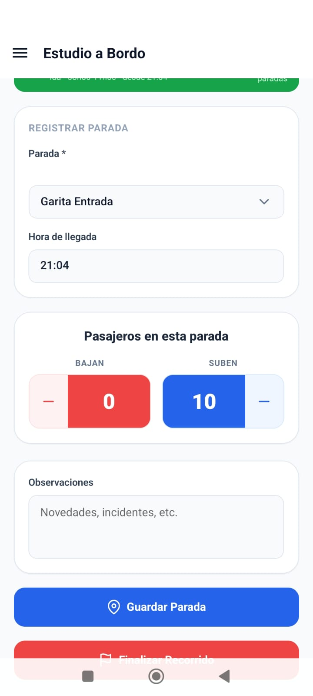
El recorrido empieza en la Garita Entrada. Al seleccionarla, la hora 21:04 se rellena de forma automática. El recolector registra 10 pasajeros que suben y ninguno que baja (punto de partida). Al tocar "Guardar Parada", el registro queda almacenado en el dispositivo.
Después de guardar, toque el registro en el historial inferior para ver la ficha completa con hora de llegada, hora de salida, subieron y bajaron.
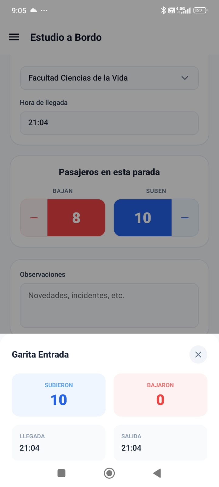
Al tocar un registro guardado en la sección "Paradas Registradas", la app despliega un panel inferior con el resumen completo: pasajeros que subieron y bajaron, hora de llegada y hora de salida. Este panel es de solo lectura y permite verificar los datos antes de continuar al siguiente punto.
En este ejemplo, la Garita Entrada muestra correctamente: Subieron 10 · Bajaron 0 · Llegada 21:04 · Salida 21:04.
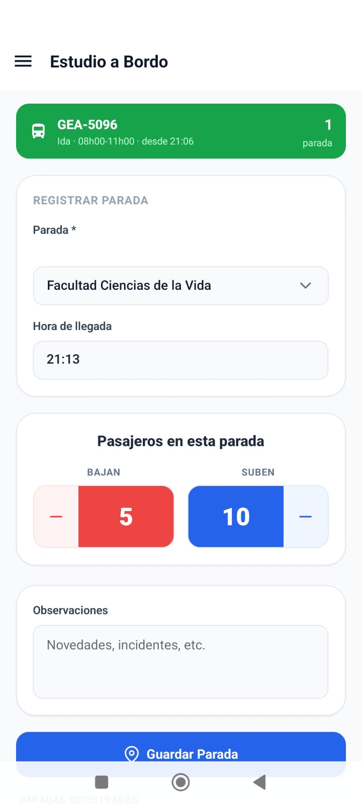
El bus llega a las 21:13 a la Facultad de Ciencias de la Vida. El banner verde ya refleja 1 parada previamente registrada. El recolector anota que 5 pasajeros bajan y 10 suben, y procede a guardar el registro de esta segunda parada.
Este patrón se repite para cada punto del trayecto hasta completar el recorrido.
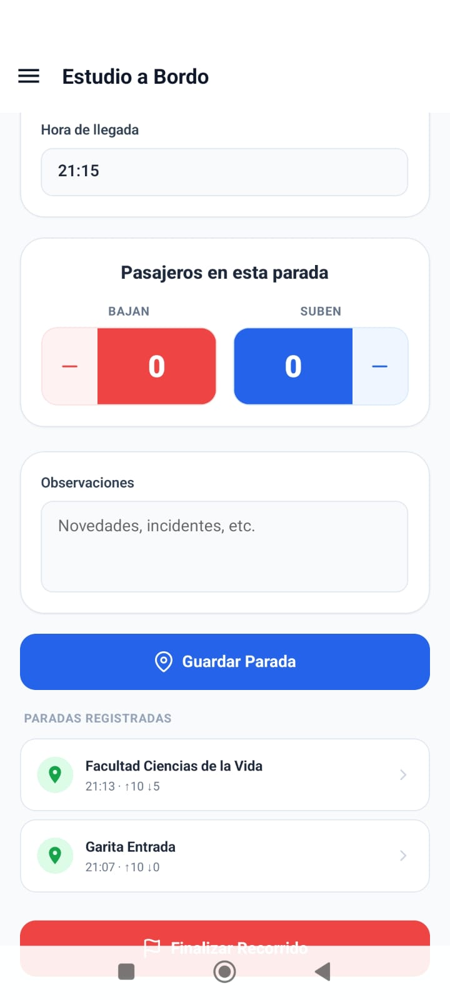
La sección "Paradas Registradas" muestra el historial completo del recorrido en orden cronológico inverso (la más reciente primero). Cada tarjeta resume: nombre de la parada, hora de llegada, pasajeros que subieron (↑) y que bajaron (↓).
Toque cualquier tarjeta para abrir el panel de detalle con los datos completos.
| Parada | Hora | Suben | Bajan |
|---|---|---|---|
| Garita Entrada | 21:07 | 10 | 0 |
| Facultad Ciencias de la Vida | 21:13 | 10 | 5 |
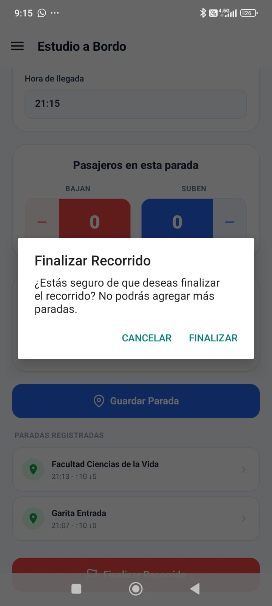
Al presionar "Finalizar Recorrido" (botón rojo al pie del panel), la app muestra un modal de confirmación. Si el recolector confirma con "Finalizar", el recorrido se cierra y pasa al estado pendiente de sincronizar.
⚠️ Acción irreversible: una vez finalizado, no es posible añadir ni editar paradas. Asegúrese de haber registrado todos los puntos del trayecto antes de confirmar.
El recorrido finalizado aparecerá como "1 recorrido pendiente de sincronizar" en el banner naranja de la pantalla de Inicio de Recorrido. Tóquelo para subirlo a la nube cuando disponga de conexión.
Este módulo registra puntos de datos de conectividad de forma periódica mientras el observador recorre una ruta. Los datos ayudan a identificar zonas sin señal o con cobertura deficiente.
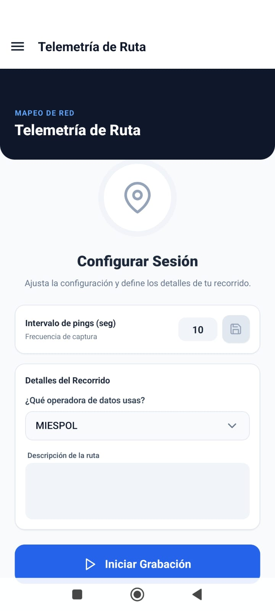
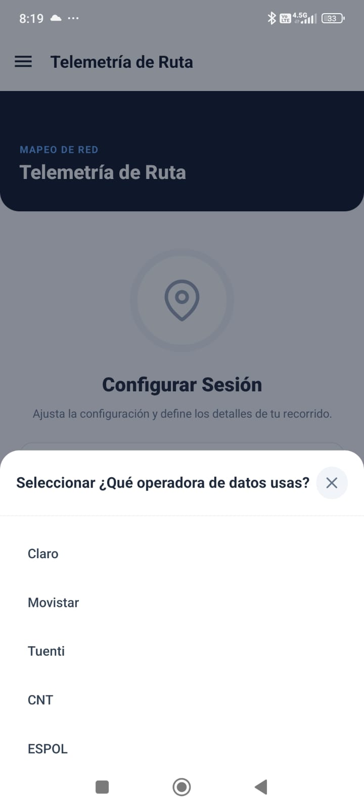
| Parámetro | Descripción |
|---|---|
| Intervalo de pings (seg) | Frecuencia de captura de puntos GPS. Mínimo 5 segundos; por defecto 10 segundos. El valor se guarda automáticamente y persiste entre sesiones. |
| Operadora de Datos Obligatorio |
Proveedor del plan de datos activo en el dispositivo:
ClaroMovistarTuentiCNTESPOL
|
| Descripción de la ruta Obligatorio | Texto libre que describe el recorrido (ej. "Ruta al campus, clima lluvioso"). Contextualiza los datos capturados para su posterior análisis. |
Si hay datos de telemetría sin sincronizar, aparecerá un banner naranja mostrando la cantidad de puntos pendientes. Presionar "Subir" los enviará al servidor (requiere conexión).
Los puntos de telemetría son procesados por el equipo técnico para generar mapas de cobertura. El observador solo debe asegurarse de completar el recorrido y sincronizar los datos.
La app está diseñada para funcionar sin conexión a internet. Todos los datos se guardan primero en la base de datos local del dispositivo y pueden subirse al servidor cuando haya conectividad disponible.
| Estado | Significado | Acción requerida |
|---|---|---|
| 🟡 Local / Pendiente | Guardado en el dispositivo, aún no enviado al servidor. | Sincronizar cuando haya conexión. |
| 🟢 Sincronizado | Enviado y confirmado en el servidor. | Ninguna. Los datos están seguros en la nube. |
| 🔴 Error de sincronización | El envío falló (sin internet o error del servidor). | Volver a intentar cuando haya conexión estable. |